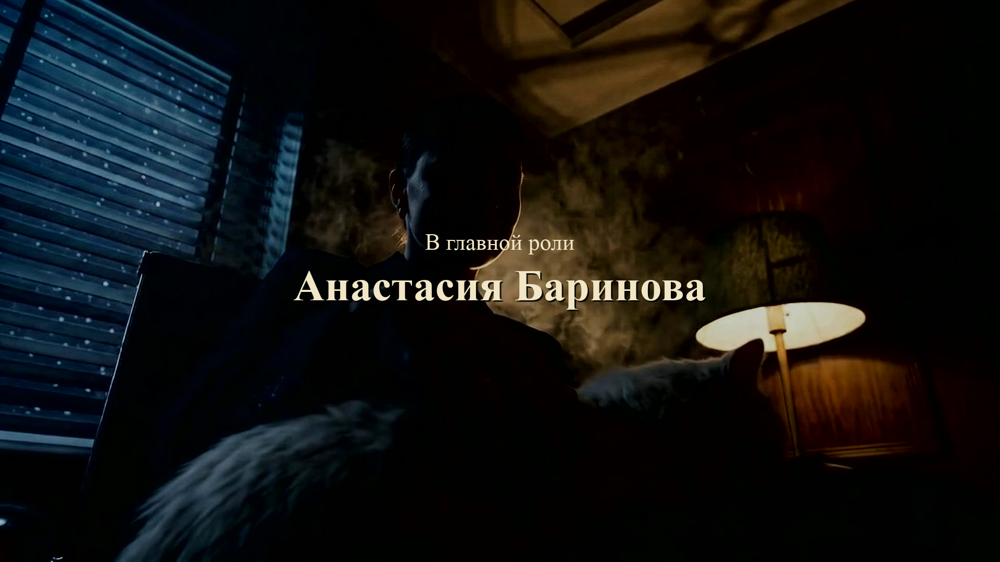
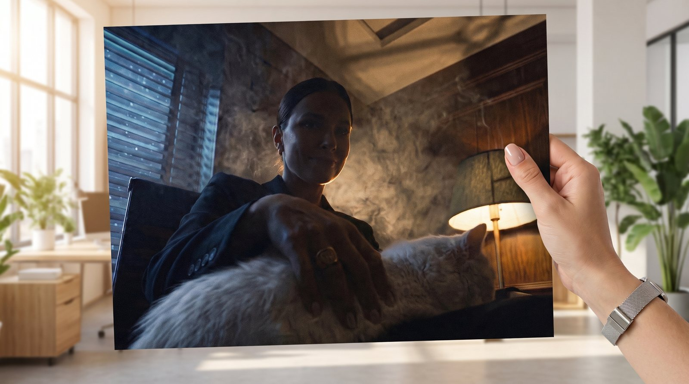
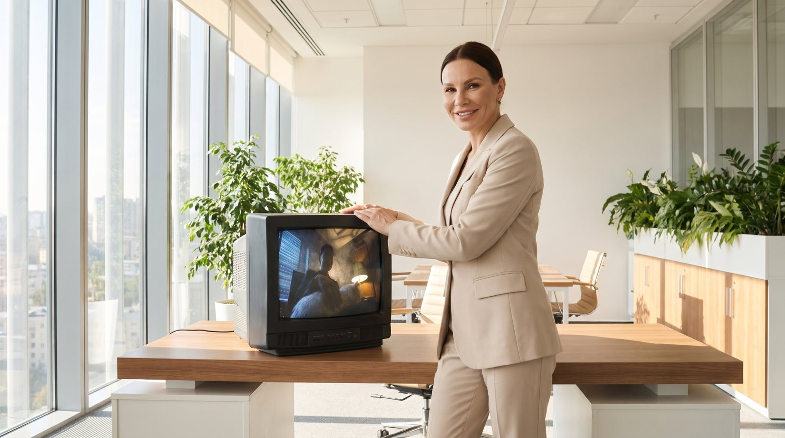

1. «…я приду за тобой». Врывается тема любви, кадр замирает 3 с

2. Музыка играет дальше, кадр темнеет, идут старые титры 4 с

3. Из-за края кадра появляется современная рука с маникюром и хватает старый кадр, как фотографию. Музыка обрывается 2 с4. Настя сдвигает старый кадр в сторону. За ним светлый современный офис, Настя в бежевом костюме: «Так, стоп-стоп-стоп…» 3 с5. Настя в кадре одна, в объектив: «…сейчас всё по-другому». Дальше часть 2 3 с
Другой вариант шагов 3–4

Старый фильм идёт по старому телевизору в современном офисе. Настя отодвигает телевизор рукой и улыбается в объектив.